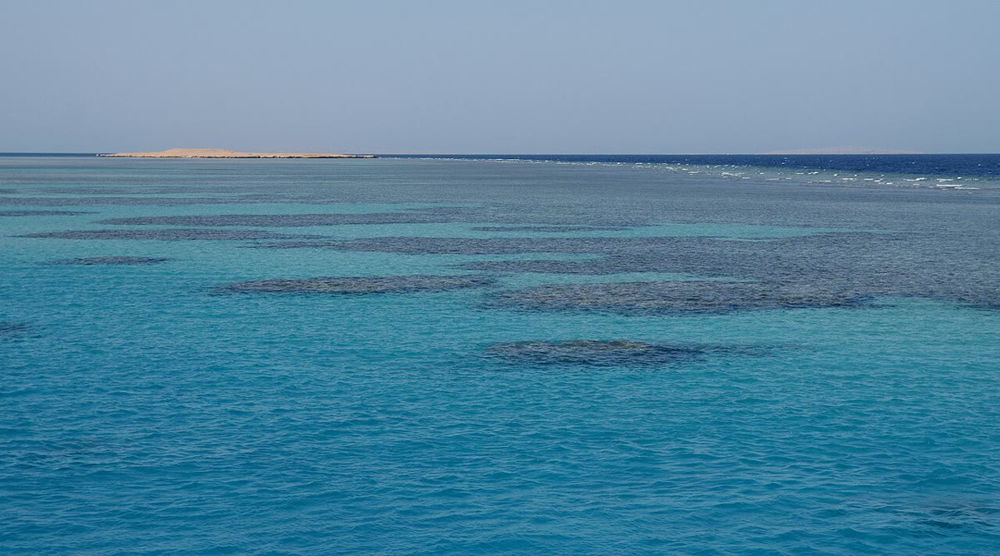

Internacional · 24 de outubro
Expedição mapeia recifes profundos no Atlântico
Equipe de seis países registrou 14 espécies em áreas pouco estudadas; dados vão apoiar a criação de uma reserva.

Uma expedição internacional concluiu neste sábado (24) o mapeamento de três áreas de recifes profundos no Atlântico. Durante 30 dias, pesquisadores de seis países usaram sonar, veículos submersíveis e mergulho técnico para registrar 14 espécies de corais, esponjas e peixes em profundidades de 60 a 120 metros.
O levantamento ocorreu em pontos pouco estudados entre o litoral brasileiro e a costa africana. A equipe coletou amostras de água, mediu temperatura e acidez e instalou quatro sensores que vão transmitir dados por dois anos. Todo o material será publicado em um portal aberto até dezembro.
Reserva em discussão
Os dados vão embasar a proposta de uma reserva marinha de 18 mil quilômetros quadrados. A área inclui corredores usados por tartarugas e tubarões e é atravessada por rotas de pesca. O projeto prevê compensação para comunidades pesqueiras e fiscalização conjunta.
“Não queremos criar uma área intocada e expulsar quem vive do mar. Queremos proteger o que ainda está de pé e garantir renda no longo prazo”, disse a bióloga marinha Clara Nogueira, coordenadora da expedição.
“Cada mergulho mostrava algo que não estava nos mapas. Isso muda a forma de planejar a conservação.”
Clara Nogueira, bióloga marinha
Ameaças e próximos passos
Os pesquisadores encontraram sinais de branqueamento em 11% dos corais observados, além de lixo plástico em dois pontos. A temperatura da água estava 0,8 °C acima da média histórica para a época. “O recife profundo é mais protegido do calor, mas não é imune”, explicou o oceanógrafo Túlio Menezes.
A proposta de reserva será discutida em audiências públicas em novembro. O governo costeiro e representantes da pesca já pediram mais tempo para analisar o impacto econômico. A expectativa é que o decreto seja assinado no primeiro semestre de 2027.
Enquanto isso, as imagens e os dados brutos ficarão disponíveis para escolas e universidades. A expedição também produziu um documentário de 22 minutos, que será exibido em Vale Verde a partir de dezembro.